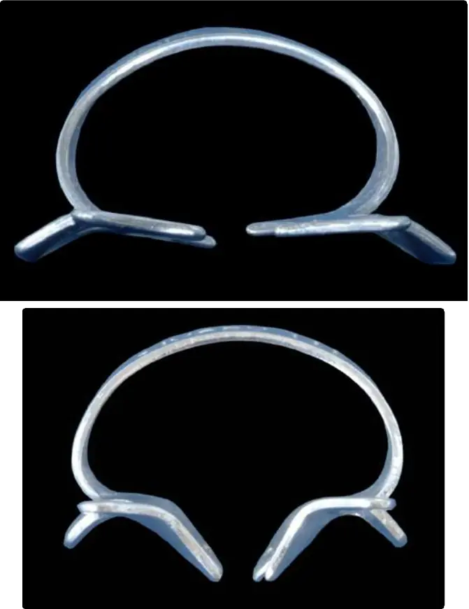

نسخه استخراجشده؛ ترجمه یا تأیید علمی انجام نشده است. وضعیت: captured
همکلاسیات کلمپ را روی مولر دوم بالا گذاشته و کمانش رو به مزیال مانده است. استاد میگوید: «کلمپ را برگردان.» کمان کلمپ باید کدام سمت دندان باشد، و بقیهی اجزا کجا مینشینند؟
کلمپ یک قطعهی فلزی فنری است. نام اجزایش را بدان، چون در بخش با همین نامها حرف میزنند.
حرف W پیش از شماره یعنی کلمپ بیبال (مثل W8A)؛ شمارهی بیW یعنی بالدار (مثل 8A). بال ورق را بیشتر از میدان کار کنار میزند و اجازه میدهد ورق را پیش از بردن به دهان روی کلمپ سوار کنی. پس از جا افتادن کلمپ، ورق را از روی بالها پایین میدهی. اگر بال قدامی مزاحم است، میتوان آن را تراشید.
سازندهها کلمپها را در سه گروه قدامی، پرمولر و مولر میفروشند، ولی آنچه کار را عوض میکند شکل فک و کمان است.

اشتباه رایج: فکهایی که از لاینانگل مزیال و دیستال جلوتر رفتهاند. چنین کلمپی جای ماتریکس و وج را میگیرد، لثه را بیشتر آسیب میزند و سیل دور دندان لنگر را سخت میکند.